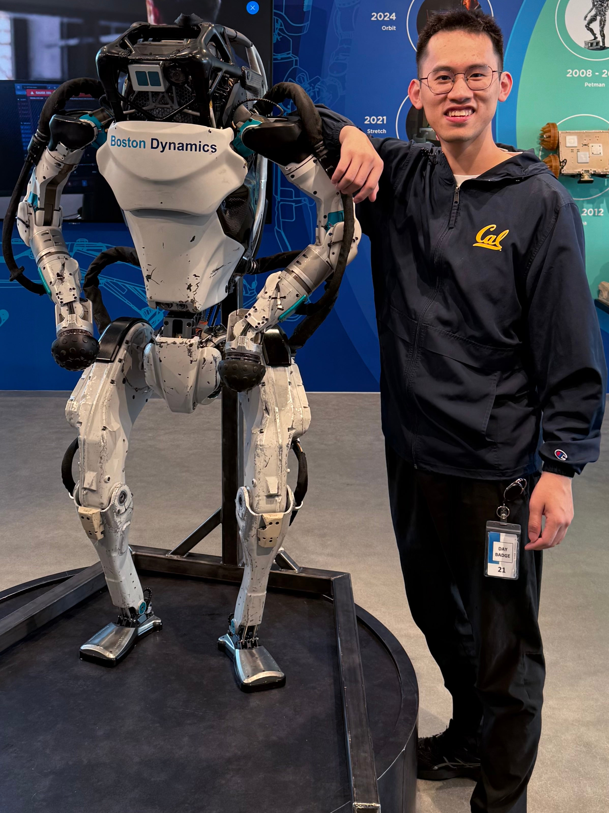

|
Qiayuan Liao I'm a second-year Ph.D. student at Hybrid Robotics, UC Berkeley, advised by Prof. Koushil Sreenath. I'm a full-stack roboticist dedicated to creating systems achieve agile and robust locomotion and manipulation. Toward this goal, I focus on: (a) Developing novel machines and actuations; (b) Combining learning and model-based methods; (c) Co-designing hardware, learning and control. |
 |
{kind=link}
Research |

|
Kevin Zakka*, Baruch Tabanpour*, Qiayuan Liao*, Mustafa Haiderbhai*, Samuel Holt*, Jing Yuan Luo, Arthur Allshire, Erik Frey, Koushil Sreenath, Lueder A. Kahrs, Carmelo Sferrazza, Yuval Tassa, Pieter Abbeel Under Review [Project Page] [Paper] [Code] A fully open-source framework for robot learning built with MJX, with the express goal of streamlining simulation, training, and sim-to-real transfer onto robots. |
|
|
Qiayuan Liao, Bike Zhang, Xuanyu Huang, Xiaoyu Huang, Zhongyu Li, Koushil Sreenath International Conference on Robotics and Automation (ICRA), 2025 [Project Page] [Paper] [Code] We introduce Berkeley Humanoid, a reliable and low-cost mid-scale humanoid research platform for learning-based control. |